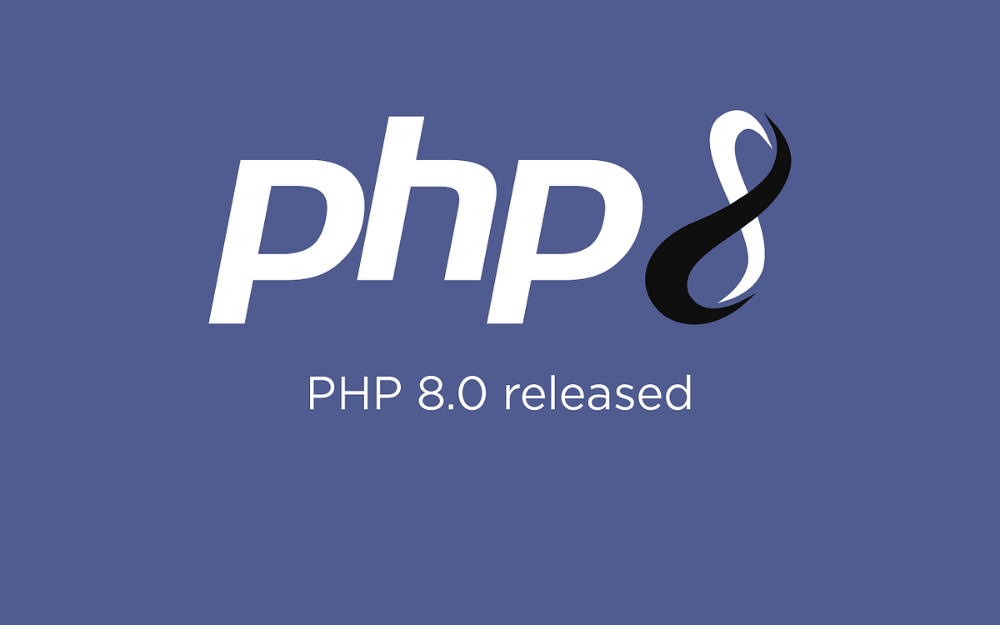
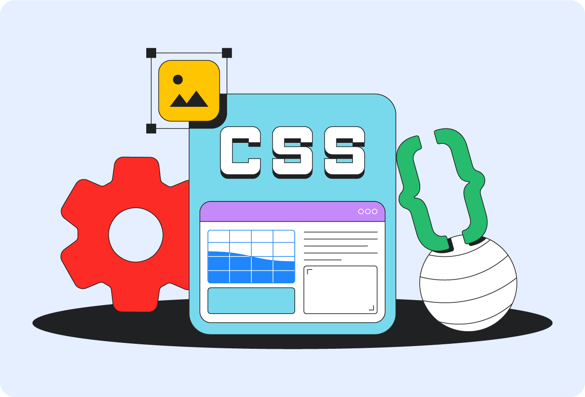
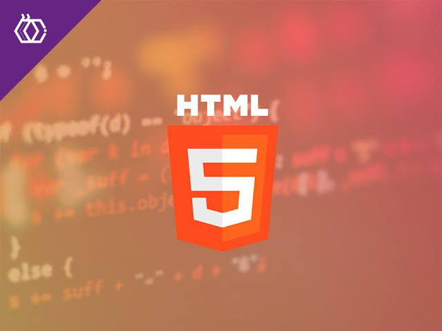
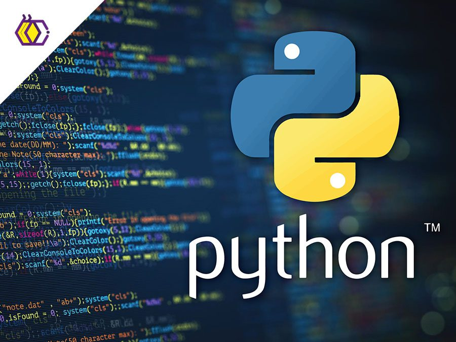
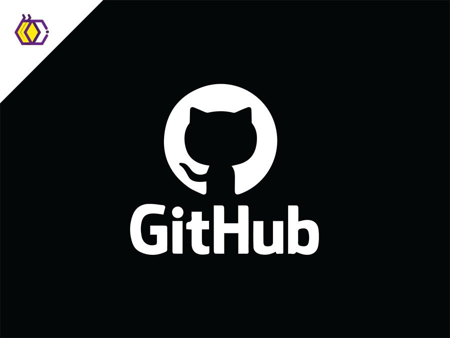
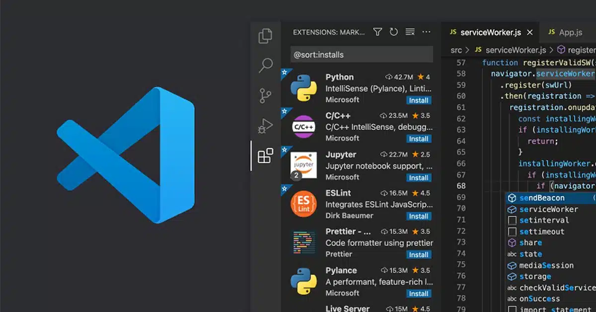

Oi, eu sou Anny Nicolly.
Seja bem-vindo ao meu portfólio! Aqui compartilho um pouco da minha trajetória, dos conteúdos que estudo em Informática e das ferramentas que utilizo.
Anny Nicolly
Estudante de Informática
Aprendizados
Tecnologias que estudo
Entre exercícios, revisões e atividades, sigo aprendendo novas linguagens e conceitos de desenvolvimento.
No semestre passado nós estudantes de informática 1 estudamos Python, com questões e revisões. Neste semestre, a professora Israely vem nos ensinando PHP por meio de listas de atividades. Também estamos estudando HTML e CSS, conhecendo as tags e suas funções.

Imagem não disponível
Imagem não disponível
Imagem não disponível
Imagem não disponívelMeu dia a dia
Ferramentas de estudo
Recursos importantes para escrever código, organizar atividades e acompanhar projetos.
Durante esta jornada, algumas ferramentas foram essenciais nos estudos de programação. Entre elas estão o Visual Studio Code e o GitHub, usados para programar, salvar nossos projetos e interagir com trabalhos de outros programadores.

Imagem não disponível
Imagem não disponívelNa prática
Meus links
Acesse meu perfil e os repositórios que compartilhei.
Além do código
Uma história que também é feita de arte e criatividade.
Meu interesse pela informática tem ligação com desenhos, jogos, vídeos e edições. Quer conhecer melhor minha trajetória?
Ver minha história ↗